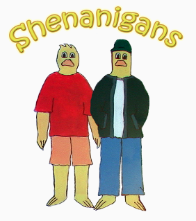

Taje, spejo, terasaki. It sounds like nonsense, but in Shenanigans, this is just common talk. Shenanigans is a show of humor and friendship. The protagonists, Robbie and Hunter, get into “shenanigans” on a frequent basis. Neither of them are geniuses, or talented, or attractive, but the way they live is just plain fun. They speak with weird words, they play weird games, and eat weird food. It’s like they don’t notice the world around them, but the world definitely notices them. The show is somewhat similar to Beavis and Butthead and South Park, but it is unique in its own sense. It'll have you spe-ing some sick Nene.
